Puedes entrar en este santuario desde que llegas a la región de la torre del bosque. Está en medio de las Ruinas de Oumbra (al norte del Bosque de Hyrule).
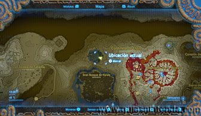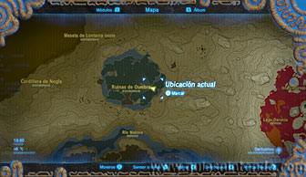
Una vez que llegues a él te verás envuelto en una profunda oscuridad y entonces se activará la Prueba heroica "La prueba tenebrosa". Deberás avanzar así hasta localizar un pedestal con un agujero, donde tienes que introducir una esfera. Esta esfera está muy cerca, pero cuelga del cuello de un Hinox. Tendrás que derrotarlo para poder abrir la entrada del santuario.
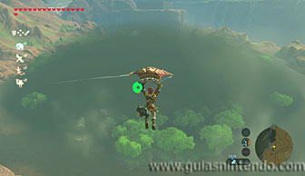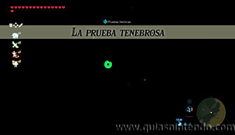
Para moverte por la oscuridad tendrás que usar algo que te ilumine. Lo mejor es que uses una antorcha por su duración y facilidad de manejo, hay varias repartidas por aquí, aunque es aconsejable que llegues con una en tu inventario. Si no estás cerca de una hoguera, siempre puedes crear fuego con un pedernal y leña o usando algún arma de fuego (cetros, espadas o flechas pueden servirte). Una vez que tengas tu antorcha encendida, ve encendiendo las estatuas con forma de pájaro que encuentres.
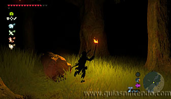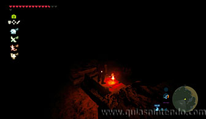
Busca por la zona central de la zona el pedestal que necesitas activar. Muy cerca de él está dormido el Hinox que tiene la esfera en su poder. Para poder derrotarlo solo debes disparar al ojo, igual que con otros, el problema es que seguirás sin apenas poder ver. Sin embargo, el ojo se ve cuando está abierto, así que tampoco te resultará muy difícil acertarle.
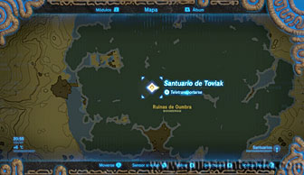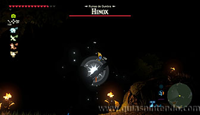
Para acabar con él rápidamente también puedes quemarle las piernas y acercarte cuando caiga para rematarle.
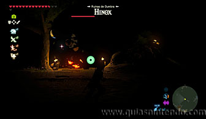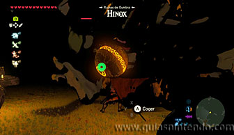
Al acabar con él, coge la esfera y llévala al pedestal para que aparezca la entrada. Dentro podrás abrir un cofre con un Núcleo ancestral. Cuando llegues al altar del santuario examínalo para obtener un símbolo de valía.
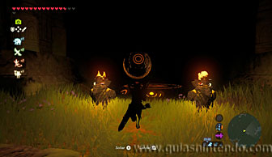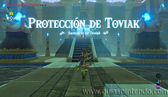